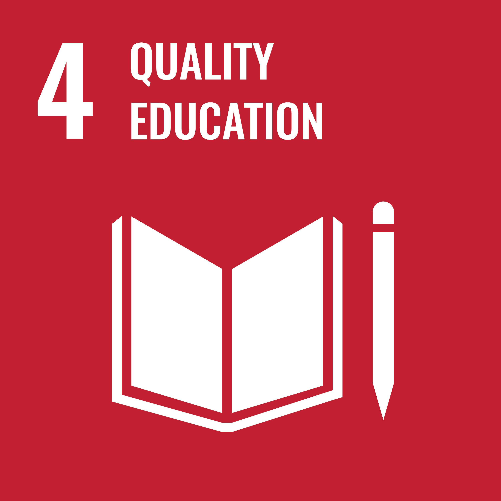
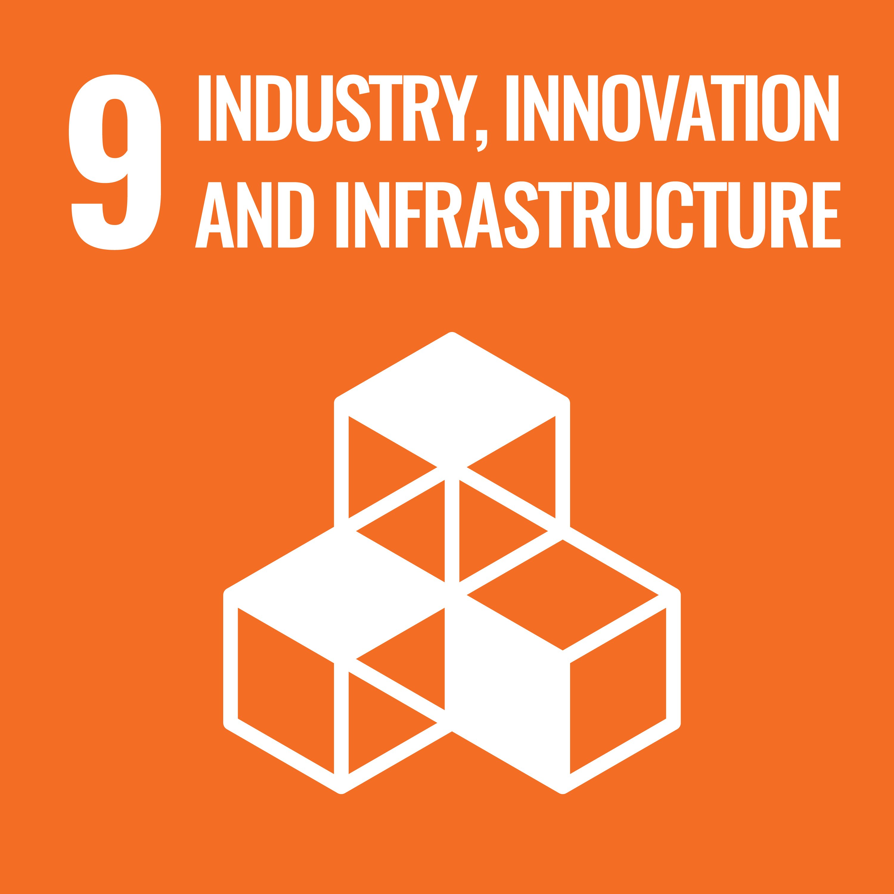
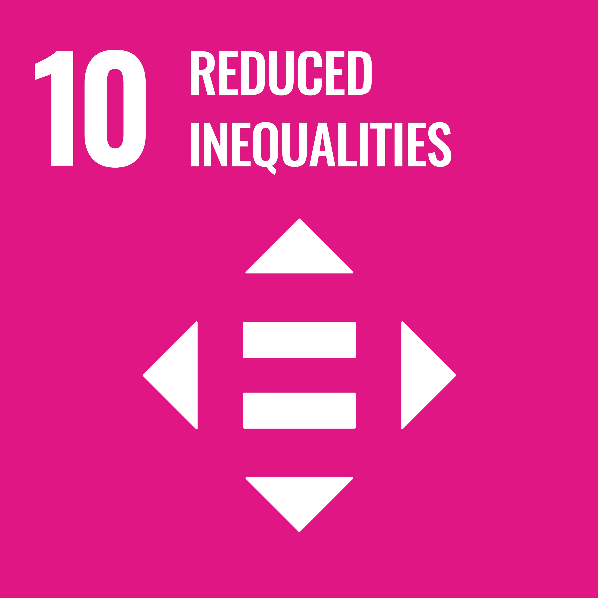

Building foundational AI knowledge through locally-hosted open-source LLMs, fostering peer collaboration, and empowering IDREN member institutions with privacy-aware solutions for network operations.
Project updates and media coverage about LLMNetOps
Many IDREN member institutions struggle to adopt AI-supported network management due to limited staff, uneven expertise, and reliance on undocumented knowledge. Most administrators also lack training, confidence, and tools that respect data privacy.
LLMNetOps addresses this gap by building foundational AI knowledge, fostering peer collaboration, and promoting locally-hosted open-source LLMs as privacy-aware solutions tailored to institutional needs.
Read More About Our MissionEmpowering institutions with privacy-first AI solutions
Promote locally-hosted open-source LLMs as a practical solution for institutions concerned about data privacy and autonomy.
Use generative AI to help technical teams manage, understand, and document their own infrastructure.
Give network and IT staff the knowledge and confidence to use AI in their daily tasks.
Build a culture of learning and shared problem-solving through workshops and peer collaboration.
Investigate how locally-hosted LLMs can be safely integrated into network operations.
Help IDREN members assess and adopt AI solutions that fit their specific requirements.

Training and capacity building that gives network professionals equitable access to AI literacy and skills.

Open-source, locally-hosted LLMs that build resilient digital infrastructure in the Asia-Pacific.

Bringing privacy-first AI tools and knowledge to underserved institutions.